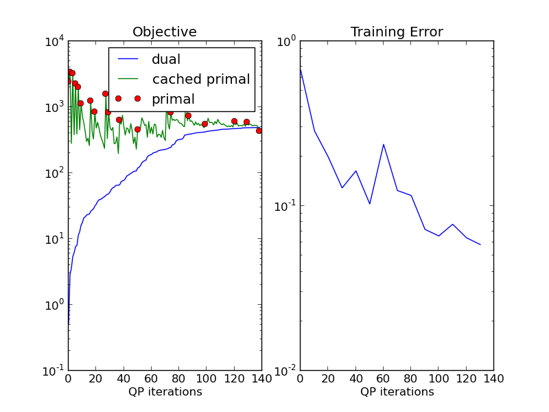

This example illustrates the use of plot_learning.py, which can be used to analyze the learning of models. The file can be call directly as executable or imported as done here.
The task is the same as in plot_directional_grid.py.
Red circles show the primal objective when inference was run. The green curve shows the approximated primal objective when finding constraints from the cache. The blue shows the objective restricted to the working set. The blue curve is guaranteed to increase in cutting plane training in each step, and provides a lower bound on the primal objective.
In contrast to the caching proposed in [1], we do not produce constraints from the cache as long as possible. A heuristic is used to see whether the cached constraint is strong enough.
Here training is stopped when the green curve goes below the blue curve. This means no strong enough constraint could be found. The fact that the primal objective can go below the cutting plane objective is a result of approximate inference. The real most violating constraint could not be found, leading to underestimating the primal objective.
See plot_exact_learning.py for a way to deal with this.
Script output:
Training 1-slack dual structural SVM
new constraint too weak.
new constraint too weak.
no additional constraints
OneSlackSSVM(C=1, break_on_bad=False, cache_tol=auto, check_constraints=False,
inactive_threshold=1e-05, inactive_window=50, inference_cache=100,
logger=None, max_iter=10000,
model=DirectionalGridCRF(n_states: 3, inference_method: qpbo, n_features: 3, n_edge_features: 2),
n_jobs=-1, negativity_constraint=None, show_loss_every=10,
switch_to=None, tol=0.1, verbose=0)
Iterations: 139
Objective: 490.677066
Gap: -61.469824
Python source code: plot_objective_curve.py
from pystruct.models import DirectionalGridCRF
import pystruct.learners as ssvm
from pystruct.datasets import generate_blocks_multinomial
from pystruct.plot_learning import plot_learning
X, Y = generate_blocks_multinomial(noise=2, n_samples=20, seed=1)
crf = DirectionalGridCRF(inference_method="qpbo", neighborhood=4)
clf = ssvm.OneSlackSSVM(model=crf, C=1, n_jobs=-1, inference_cache=100, tol=.1,
show_loss_every=10)
clf.fit(X, Y)
plot_learning(clf, time=False)
Total running time of the example: 16.94 seconds